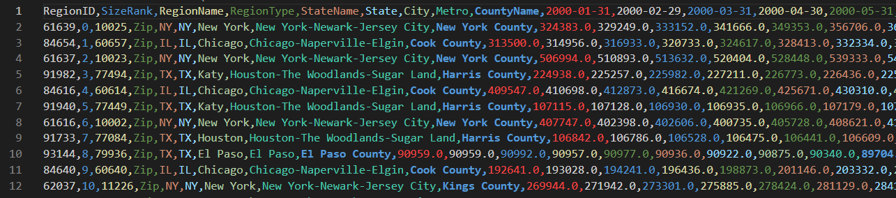
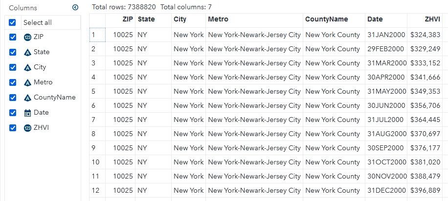

Loading Zillow Housing Data in SAS
Dealing with Dates in CSV Headers
Zillow is a well-known website widely used by those searching for a home or curious to find out the value of their current home. What you may not know is that Zillow has a dedicated research page. To make their website work optimally, they churn through tons of data on the American housing market. They share insights they gleaned via zillow.com/research. If you visit their research website you’ll notice they have a data page where you can download some really cool data sets for your own research. They even have an API with which you can load data directly, but you’ll have to register for access. In this post, we’ll look at how to load the CSV files that are available for direct download into SAS for analysis.
The CSV files can be downloaded here. In the example below, I’m working with the Zillow Home Value Index file for all homes, seasonally adjusted at the ZIP code level. Tha file is fairly large. It has data going from January 2000 through June 2022 in more than 27,000 rows of data and about 280 columns. Below is an image of the beginning of this file.

When working with large CSV files, I find it useful to get a feel for it in the CLI with csvkit. This is especially important when importing with a SAS data step, because we need to know the number of columns and their order, amongst other things, for our code. To get an overview of the total number of columns and their contents, run
csvcut -n Zip_zhvi_uc_sfrcondo_tier_0.33_0.67_sm_sa_month.csv
The output is fairly long, so you may prefer piping to a pager. I don’t need all the different identifiers in the file, so I’m going to exclude those I won’t need and put them into a separate, smaller CSV.
# ignore these four columns which I won't need
csvcut -C RegionID,SizeRank,RegionType,StateName Zip_zhvi_uc_sfrcondo_tier_0.33_0.67_sm_sa_month.csv > Zip_zhvi_small.csv
# alternatively, also cut down on date columns to only 2022 for debugging
csvcut -C RegionID,SizeRank,RegionType,StateName,10-273 Zip_zhvi_uc_sfrcondo_tier_0.33_0.67_sm_sa_month.csv > Zip_zhvi_small.csv
You can also reduce the file size by using csvgrep to filter any of the columns. For example, if we only wanted
the data for North Carolina we could run csvgrep -c State -m NC in the pipe.
For SAS, we need to know the maximum length of string columns so we can allocate the appropriate length to the corresponding SAS variables. This is easily done with the csvstat tool:
csvcut -c Metro,City,CountyName Zip_zhvi_small.csv | csvstat --len
You can also specify the list of columns in csvstat directly, but in my experience that tends to be slower.
Alright, now we have everything we need to start on our DATA step! We start with the attribute statement.
One problem with importing this file is that everyhing is in wide format, with the dates used as headers.
We will get around this shortly. I have seen people use transpose etc for similar problems online, but this
is unnecessary if we feel comfortable with the DATA step. We’ll start by naming the identifying columns
just as in the CSV file. For the date columns, we will use a numeric range prefixed by date (date1-date270).
You can use csvcut to find the exact number of date columns you have. We will also allocate the same number of
columns for the ZHVI values, so we’ll need to add a val1-val270. This and the date variable are temporary
and will be dropped later, in favor of the Date and ZHVI variables.
attrib
ZIP informat=best12. format=z5.
State informat=$2.
City informat=$30.
Metro informat=$42.
CountyName informat=$29.
date1-date270 informat=YYMMDD10. format=DATE9.
val1-val270 informat=best16.
Date format=Date9.
ZHVI format=Dollar16.
;
Now we will allocate an array to hold all of the date and ZHVI values during the processing of each row. Since the date column won’t change, we’ll tell SAS to retain its values.
retain date1-date270;
array d(270) date1-date270;
array v(270) val1-val270;
This is where the magic happens now. You may not know it, but you are not limited to a single INPUT statement in a DATA step. We use this and start by reading in only the first row. Because we use an OUTPUT statement later, this reading of row 1 will be processed, but not saved into the output data set.
if _n_ = 1 then do;
input ZIP $ State $ City $ Metro $ CountyName $ date1-date270;
PUT _ALL_; /* if you want to see what that looks like */
end;
With this if clause, the date1 through date270 variables will be populated, and because we used a retain statement earlier, these values remain available to us during the processing of every other row. You can probably guess where this is going now: we will process each row, and then OUTPUT one line per date which we have access to now thanks to our array and the retain statement.
input ZIP $ State $ City $ Metro $ CountyName $ val1-val270;
do i=1 to 270;
Date = d(i); /* look up date for column i */
ZHVI = v(i); /* use the corresponding i-th value for ZHVI */
OUTPUT; /* This output creates one line per date column */
end;
At the end of your data step, don’t forget to
drop i date1-date270 val1-val270;
so those variables don’t clutter your data set. And that’s it! You now have the data set loaded and available in SAS.

D. Michael Senter
Analytics Software Tester
My research interests include computational fluid dynamics, big data analytics, and machine learning.